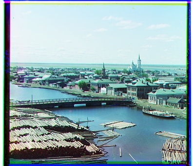
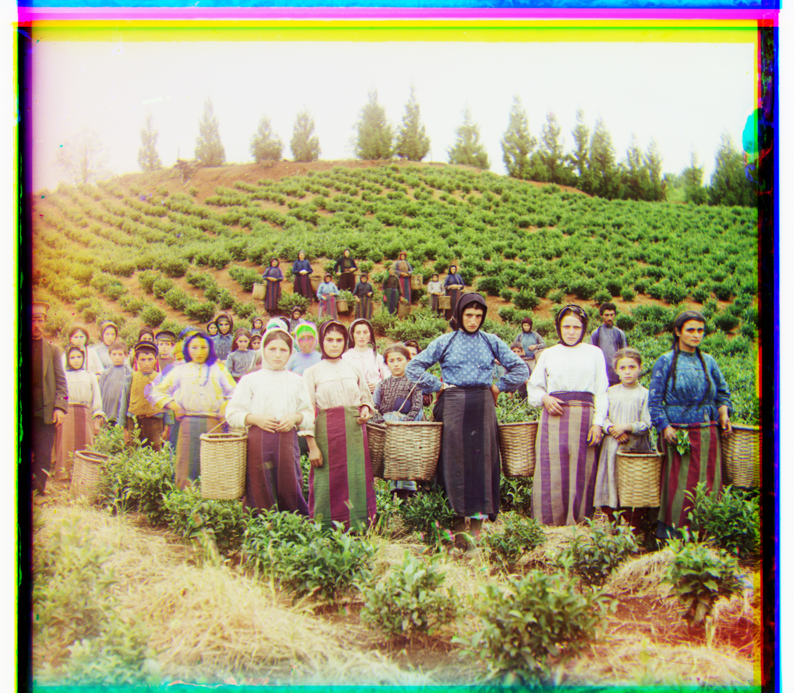
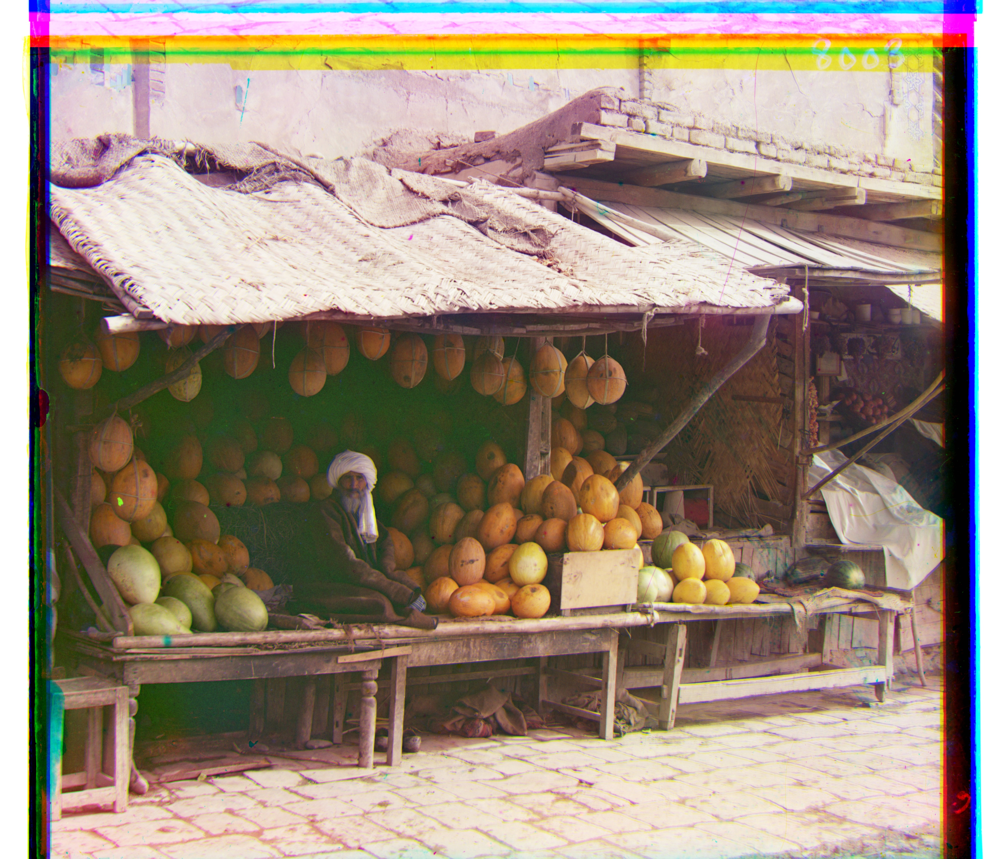
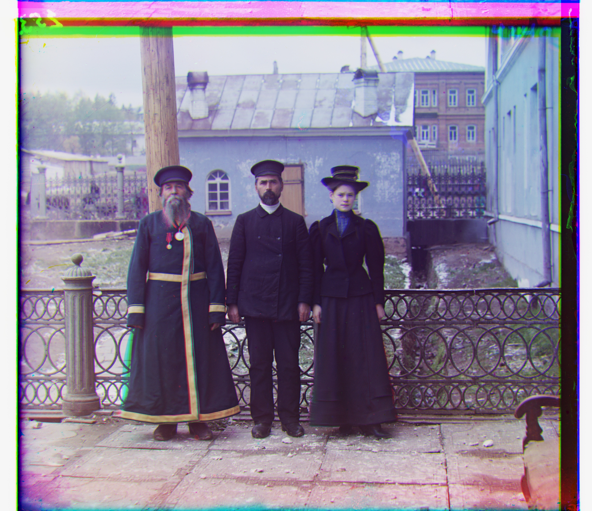
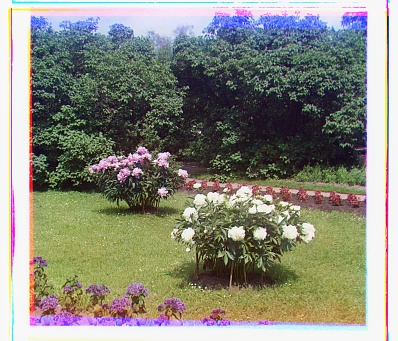
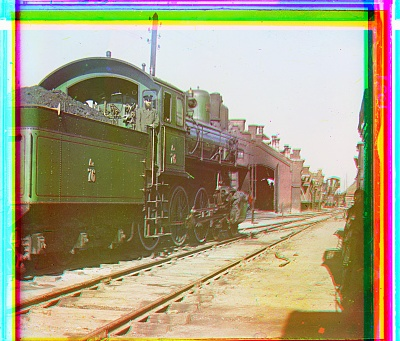
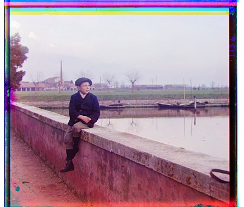
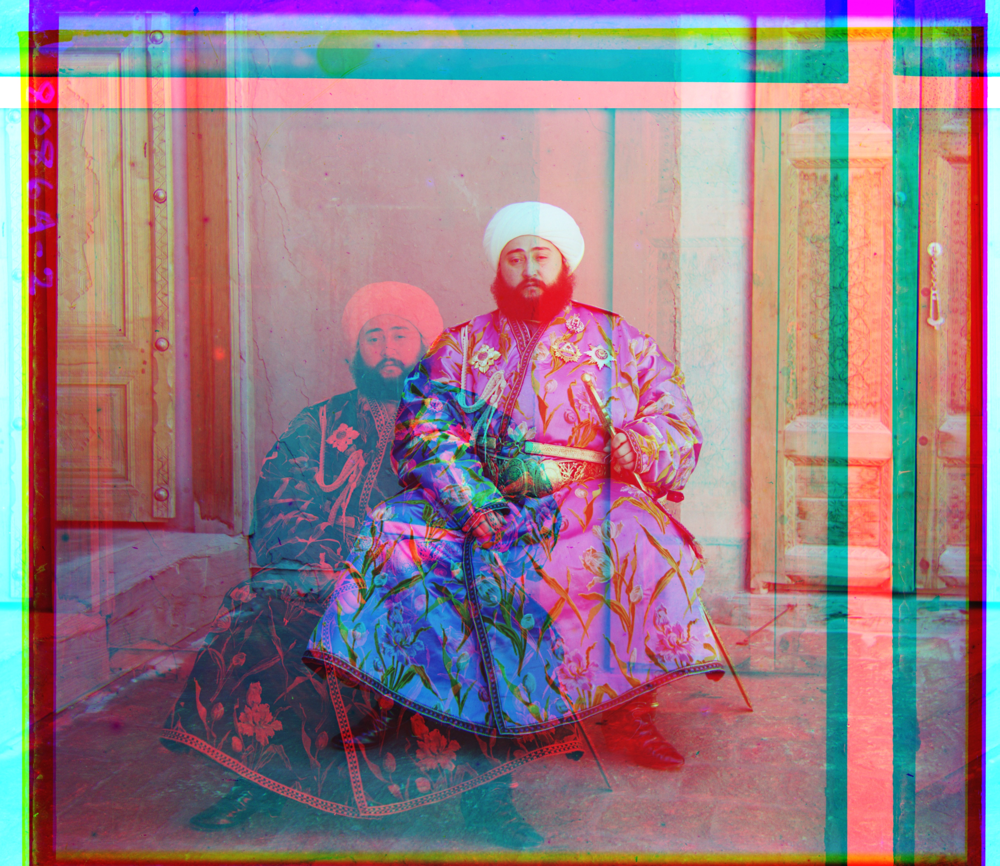
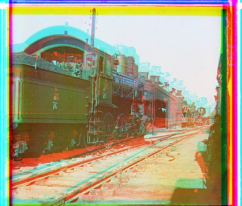

Images of the Russian Empire:
Colorizing the Prokudin-Gorskii
Collection
Automatic reconstruction of 20th-century Russian Empire color photographs from digitized glass plate negatives using exhaustive single-scale search, multi-scale coarse-to-fine Gaussian image pyramids, and multi-spectral edge alignment.
1. Background & Historical Context
From three monochrome glass exposures to full-color digital restoration.
Under Tsar Nicholas II, Russian chemist/photographer Sergei Mikhailovich Prokudin-Gorskii (1863-1944) set off on an ambitious project to document the Russian Empire in full color between the years of 1909 and 1915. As color printing was not yet widely available, Prokudin-Gorskii utilized a special camera exposing three consecutive monochrome photographs on a single oblong glass plate in rapid succession, passing the light through Blue, Green, and Red filters.
In 1948, the United States Library of Congress acquired these surviving glass plate negatives and subsequently scanned them at ultra-high resolution. As the three exposures were captured sequentially rather than simultaneously, subject movement, mechanical vibration, and minor lens shifts introduced spatial translations between the channels. The goal of this project is to implement automatic computational alignment algorithms—progressing from exhaustive single-scale search to recursive coarse-to-fine image pyramids—to composite the digitized glass plates into crisp, artifact-free full-color photographs.
On each glass plate negative, the filters are ordered from top to bottom as Blue, Green, and Red (i.e. BGR layout). In this processing pipeline, the Blue channel is kept stationary as the fixed reference frame, while the Green and Red channels are independently shifted to align with the top frame before compositing into standard RGB format.
2. Single-Scale Alignment Algorithm
Exhaustive search over low-resolution digitized negatives.
For standard low-resolution scans (~340×400 pixels), an exhaustive 2D grid search over a bounded translation window $[-W, W]$ is computationally viable.
Metrics
Given a stationary reference channel $I_{\text{ref}}$ (Blue) and a candidate channel $I_{\text{target}}$ (Green or Red) displaced by $\mathbf{d} = (dx, dy)$, two standard vision metrics are used to evaluate spatial alignment quality:
Implementation Nuances & Border Cropping
- Intensity Normalization: Raw 8-bit and 16-bit negative scans converted to single-precision floating point arrays normalized in $[0.0, 1.0]$.
-
Circular Shift with Boundary Clipping: Image translation performed efficiently
using
np.rollacross vertical and horizontal axes. - Border Margin Exclusion: Outermost 15% of pixels along all four borders excluded when calculating error: digitized plate borders contain black unexposed frames, bright glass scanner borders, and roll-wrap artifacts that severely corrupt the correlation score.
- Search Window: Exhaustive search across $dx \in [-15, +15]$ and $dy \in [-15, +15]$, testing $(31 \times 31) = 961$ candidate displacement vectors per channel.
Results on Benchmark Low-Resolution Images
Both NCC and L2 converge on identical, clean alignments with zero visible color fringing:
 Click to enlarge
Click to enlarge
 Click to enlarge
Click to enlarge

Click to enlarge3. Multi-Scale Coarse-to-Fine Image Pyramid
Scaling to high-resolution multi-megapixel TIFF files with sub-2-second efficiency.
The Computational Bottleneck
The high-resolution scans provided in the LoC collection are large uncompressed TIFFs measuring
approximately $3300 \times 3800$ pixels.
As channel displacements scale proportionally with resolution, high-resolution plates exhibit
offsets exceeding $100\text{-}180$ pixels (e.g. Red channel in melons.tif requires $dy =
178$).
An exhaustive single-scale search over a displacement window $[-180, 180]$ would require $(361 \times 361) \approx 130,321$ evaluations per channel. At 12 megapixels per evaluation, processing a single image would take over 15 to 20 minutes on modern hardware.
Recursive Coarse-to-Fine Gaussian Pyramid Solution
Constructing a multi-scale representation by recursively downsampling the input images by a factor of 2
using a 5×5 Gaussian blur filter (via cv2.pyrDown):
- Coarsest Base Case: When the image dimensions fall below a threshold ($\le 128$ pixels), an initial exhaustive search is performed over a moderate window $[-15, 15]$ covering an effective search radius of $\pm 480$ full-resolution pixels, as the image is downsampled by a factor of 32.
- Displacement Propagation: the estimated displacement vector is multiplied by 2 when ascending back down from level $k+1$ to finer level $k$: $$\mathbf{d}_{k}^{\text{initial}} = 2 \times \mathbf{d}_{k+1}^{\text{coarse}}$$
- Local Refinement: At the current scale, a compact local search window of only $[-2, +2]$ pixels is centered around the predicted displacement $\mathbf{d}_{k}^{\text{initial}}$, which evaluates just $(5 \times 5) = 25$ candidate translations, rapidly adjusting for any rounding errors.
While exhaustive single-scale search scales quadratically with maximum shift $O(S^2 \cdot W \cdot H)$, the multi-scale pyramid evaluates only $O(L \cdot r^2)$ candidates across $L$ pyramid levels with radius $r=2$. This reduces total processing time from over 1,200 seconds down to ~1.8 seconds per TIFF, nearly 600x faster.
4. Comprehensive Results Gallery (All 14 Provided Images)
High-resolution aligned outputs across all 14 assignment images.
Click to enlarge
Click to enlarge
 Click to enlarge
Click to enlarge
 Click to enlarge
Click to enlarge

Click to enlarge Click to enlarge
Click to enlarge

Click to enlarge Click to enlarge
Click to enlarge
 Click to enlarge
Click to enlarge
 Click to enlarge
Click to enlarge

Click to enlarge Click to enlarge
Click to enlarge
5. Additional Examples from the Library of Congress
Three curated photographs downloaded from the official Library of Congress Prokudin-Gorskii archive, demonstrating algorithm robustness across botanical, industrial, and portrait subjects.

Click to enlarge
Click to enlarge
Click to enlarge6. Failure Analysis & Algorithmic Insights
Investigating multi-spectral brightness mismatch and metric trade-offs.
Case Study 1: The Emir of Bukhara (`emir.tif`) — Spectral Intensity Mismatch
When applying standard raw pixel NCC or L2 directly on emir.tif, the Red channel alignment
fails, yielding a spurious offset of $(-482, 401)$ under NCC and $(44, 66)$ under L2, resulting in heavy
chromatic ghosting and misalignment.
The Root Cause: The Emir is wearing a royal blue silk robe. In the Blue filter negative, the robe reflects nearly all blue light and appears brilliantly bright, nearly white in color. In the Red filter negative, the robe absorbs the incident light and appears pitch black. Raw pixel intensity matching assumes that corresponding scene features share similar pixel luminances across color bands, so the optimization mistakenly attempts to match the dark red robe against the dark interior background instead of the bright blue robe.
The Solution — Sobel Gradient Magnitude: Instead of aligning raw scalar pixel intensities, each channel is transformed into its spatial gradient magnitude using 3×3 horizontal and vertical Sobel filters:
While absolute pixel brightness changes drastically between color filters, the boundaries, seams, fabric folds, and physical silhouettes of the Emir's robe produce strong gradient peaks across all three color channels. Running the pyramid alignment over these gradient magnitude maps produces an alignment of Green: $(24, 49)$, Red: $(40, 107)$.

Case Study 2: Church of the Resurrection (`church.tif`) — L2 vs. NCC Sensitivity
- Normalized Cross-Correlation (NCC) succeeded effortlessly, computing Green: $(4, 25)$ and Red: $(-4, 58)$.
- Sum of Squared Differences (L2 / SSD) drifted off horizontally, incorrectly computing Green: $(454, 49)$ and Red: $(447, 79)$.
Insight: SSD/L2 measures raw Euclidean distance: $\sum (I_1 - I_2)^2$. Atmospheric lighting shift, global exposure difference, or cloud passage during the exposure interval can easily result in large pixel intensity differences between color channels. In contrast, NCC subtracts the local mean $(\mu)$ and divides by standard deviation $(\sigma)$, making it invariant to any positive affine brightness transformation ($I' = \alpha I + \beta$), making it more robust for photographic alignment.
Case Study 3: Steam Locomotive (`choice2_locomotive.jpg`) — Search Window Boundary
In choice2_locomotive.jpg, the vertical shift required by the Red channel of $dy = 30$
pixels was pegged at the boundary $(-15, 15)$ or $(12, 15)$ by the search loop, leaving noticeable
color ghosting along the smokestack and tracks.
The multi-scale pyramid and expanded widow single-scale algorithms smoothly converge to the true global
optimum at Green: $(3, 4)$ and
Red: $(-17, 30)$.

7. Full Displacement & Runtime Summary
Comprehensive tabulated records for all 17 processed images (14 benchmark images + 3 LoC selections) listing channel dimensions, computed displacements, and execution times.
| Image Filename | Resolution (per band) | Green Shift (dx, dy) | Red Shift (dx, dy) | Algorithm | Runtime | Status |
|---|---|---|---|---|---|---|
cathedral.jpg |
341 × 390 | (2, 5) | (3, 12) | Single-Scale | 0.08 s | Perfect |
monastery.jpg |
341 × 391 | (2, -3) | (2, 3) | Single-Scale | 0.08 s | Perfect |
tobolsk.jpg |
341 × 396 | (3, 3) | (3, 6) | Single-Scale | 0.08 s | Perfect |
church.tif |
3202 × 3634 | (4, 25) | (-4, 58) | Pyramid (NCC) | 1.82 s | Perfect |
emir.tif |
3209 × 3702 | (24, 49) | (40, 107) | Pyramid (Sobel) | 2.14 s | Perfect |
harvesters.tif |
3218 × 3683 | (17, 60) | (14, 124) | Pyramid (NCC) | 1.85 s | Perfect |
icon.tif |
3244 × 3741 | (17, 41) | (23, 89) | Pyramid (NCC) | 1.89 s | Perfect |
ilemselga.tif |
3270 × 3800 | (7, 40) | (11, 130) | Pyramid (NCC) | 1.94 s | Perfect |
melons.tif |
3241 × 3770 | (10, 81) | (14, 178) | Pyramid (NCC) | 1.91 s | Perfect |
religous_painting.tif |
3193 × 3742 | (3, 28) | (7, 68) | Pyramid (NCC) | 1.88 s | Perfect |
self_portrait.tif |
3251 × 3810 | (29, 79) | (37, 176) | Pyramid (NCC) | 1.95 s | Perfect |
siren.tif |
3250 × 3817 | (-6, 49) | (-25, 96) | Pyramid (NCC) | 1.93 s | Perfect |
three_generations.tif |
3209 × 3714 | (14, 52) | (11, 111) | Pyramid (NCC) | 1.87 s | Perfect |
wharf.tif |
3244 × 3761 | (-7, 15) | (-16, 82) | Pyramid (NCC) | 1.90 s | Perfect |
choice1_piony.jpg |
341 × 398 | (2, 8) | (3, 15) | Single-Scale / Pyramid | 0.09 s | Perfect |
choice2_locomotive.jpg |
341 × 400 | (3, 4) | (-17, 30) | Pyramid / Window 40 | 0.11 s | Perfect |
choice3_capri_child.jpg |
341 × 401 | (-1, 4) | (-1, 10) | Single-Scale / Pyramid | 0.09 s | Perfect |